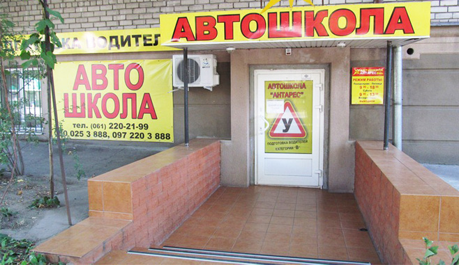

Пройдя курс обучения в автошколе “Антарес”, Вы получаете навыки вождения в условиях городского режима, парковки, контр-аварийной подготовки в экстремальных условиях, правовые аспекты дорожного движения, азы технического обслуживания автомобиля. Телефоны для записи. (067) 123-45-67, (063) 765-43-21
Набор группы на 24 апреля
* Оставте Ваши контактные данные и наш менеджер с Вами свяжется.
Одной из привилегий автошколы «Антарес» в Запорожье является наличие большого количества филиалов в каждом районе города. У нашей автошколы 10 филиалов. Что значит, что Вы обязательно сможете выбрать для себя самый подходящий по месторасположению. Во всех наших филиалах действуют одинаковые условия обучения.
Автошкола «Антарес» не ограничивает курсантов в выборе места обучения. Вы можете проходить обучении в любом районе города!
Без ложной скромности утверждаем, что наша автошкола в Запорожье занимает лидирующие позиции среди компаний, профиль которых
– подготовка водителей категории «В». Наша школа вождения сделает Вас настоящим виртуозом на дорогах, присоединив к тысячам опытных и профессиональных водителей, которым обеспечила курсы вождения «Антарес» – автошкола в Запорожье.

Если Вы давно мечтаете о свободе движения на дорогах, то Запорожская автошкола «Антарес» предоставит Вам максимально комфортные условия для обучения.Курсы вождения в нашей автошколе – это практические уроки только на современных автомобилях в отличном состоянии. Наша автошкола в Запорожье – это автомобили от европейских производителей, находящиеся в эксплуатации меньше года. Автоинструктор школы вождения подберет для Вас автомобиль, аналогичный тому, на котором Вы предполагаете в дальнейшем ездить, поэтому курсы вождения превратятся для Вас в удовольствие. Например, заднеприпроводной автомобиль будет предложен будущим профи категории «В» в том случае, если предполагается езда на заднеприводной машине. А может быть, в гараже Вас ожидает новенькая «Шкода»? Что ж, автошкола «Антарес» в Запорожье пригласит Вас за руль «похожего авто» – обучаться премудростям вождения. Трудно не согласиться, что на новеньких иномарках обучаться вождению намного приятнее и интереснее, чем проходить практику вождения на старых, немало повидавших авто. Качество полученных знаний во многом зависит от автоинструкторов, которых содержит в штате автошкола.